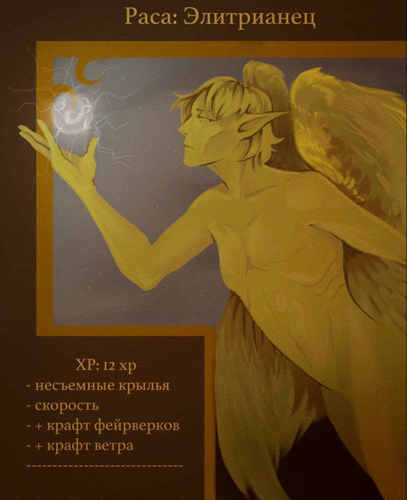
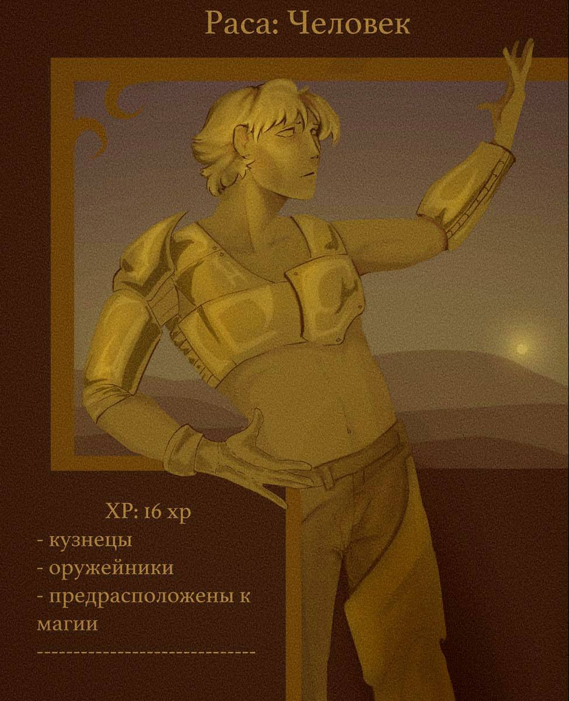
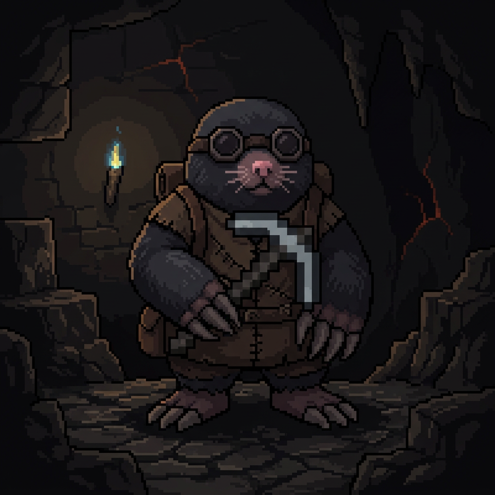
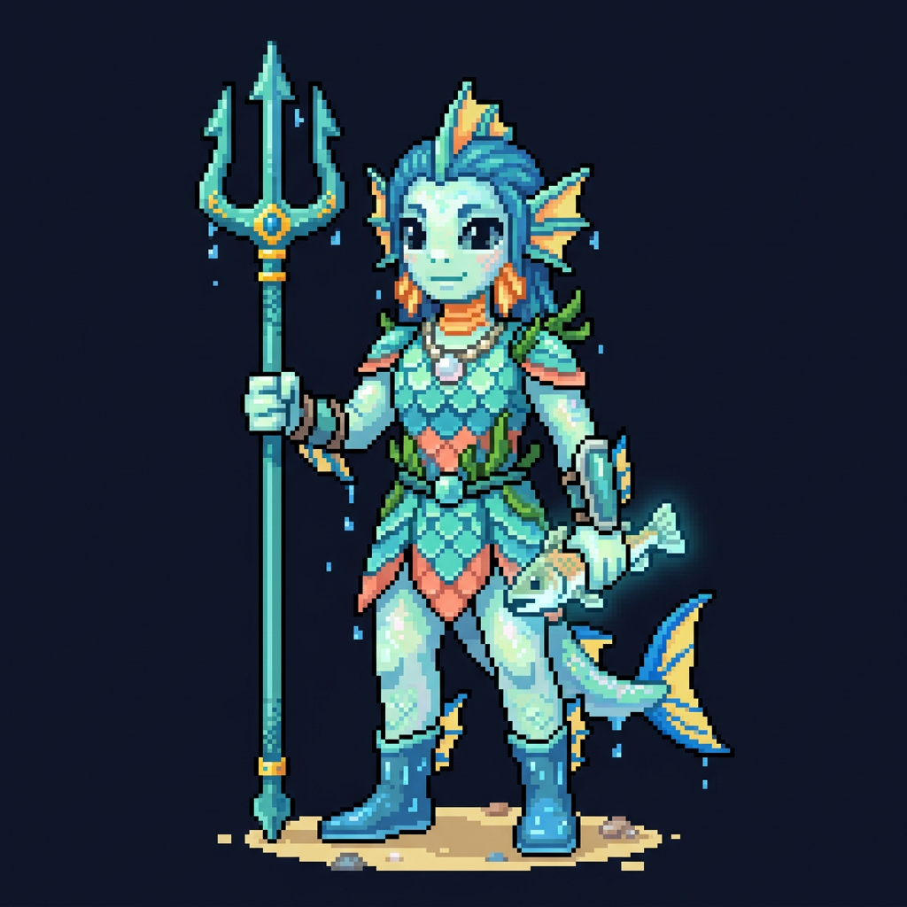
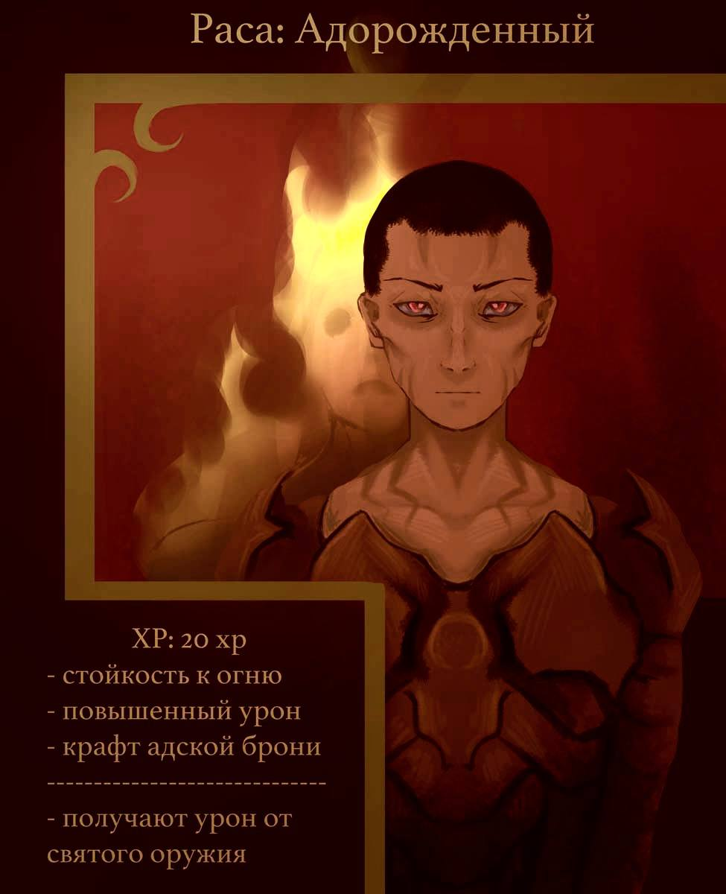

Энциклопедия
Армирии
Пять великих рас населяют этот мир. Каждая несёт собственное проклятие, историю и путь.
Расы Армирии

Элитрианец
Железнокрылые
Особенности
- ❤ 6 сердец
- Повышенная скорость передвижения
- Не могут снять элитры или надеть нагрудник
- Упрощённый крафт фейерверков
- Уникальный крафт Заряда Ветра
- Могут переносить игроков в полёте
- Пониженный урон в ближнем бою
- Плохо задерживают дыхание под водой
История
Элитрианцы — древняя раса, чьё имя в забытых манускриптах переводится как «Неприкасаемые к Небу». Легенды гласят, что они не были созданы богами — они были сломаны ими.
Когда-то они были обычными людьми, но попытка достичь небесного величия закончилась трагедией. Их тела переплавили в горнилах вечных ветров, превратив в существ, навеки застрявших между свободой и проклятием.
Главная особенность расы — их крылья. Они состоят из полых костей и тонкой, почти прозрачной мембраны. На солнечном свете через них можно увидеть небо.
Но эта красота имеет цену: крылья невероятно хрупкие. Любая тяжёлая броня ломает их, навсегда лишая Элитрианца способности летать.
Внутри них нет собственного магического ядра. Они подобны пустым сосудам, через которые может проходить чужая магия. Благодаря этому Элитрианцы способны усиливать заклинания других магов, однако чрезмерное количество энергии разрушает их разум и тело.
Несмотря на своё трагичное происхождение, Элитрианцы продолжают жить среди облаков, оставаясь вечными странниками небес.

Люди
Кузнецы Кости
Особенности
- ❤ 8 сердец
- Возможность создавать улучшенную броню и инструменты
- Способны создавать особое оружие дальнего боя
Происхождение
Согласно легенде, люди не были ни первыми, ни избранными. Они рождались слабыми, но всё изменилось в эпоху Падения Дварфов.
Когда подгорные чертоги содрогнулись от войны с порождениями глубин, люди вырвали страницы из пылающих книг и унесли в себе этот опасный дар.
Тогда народ разделился на две ветви — Людей и Кротолюдей. Люди вырвали знания из руин и превратили их в ремесло, построенное на тяжёлом труде и боли.
«Вы будете вечно ковать, но каждое ваше творение будет пить вашу плоть...»
Внешность
Люди редко бывают выше 160 сантиметров. Они широкоплечие, с массивной грудной клеткой и руками, покрытыми мозолями.
Кожа ладоней имеет сероватый металлический оттенок от въевшейся рудной пыли. Волосы жёсткие, зачастую выжженные искрами до желтоватого или пепельного цвета.
Кузнечное ремесло
Люди создают лучшее оружие и броню во всём известном мире. Их клинки не просто остры — они голодны.
Каждый великий мастер отдаёт часть собственного сердца своему лучшему творению. Если оружие будет уничтожено, погибает и кузнец, который его создал.
Магия
Люди лишены врождённой магии. Они научились заключать чужую магию в металл и считать её топливом.
Общество
Люди молчаливы, подозрительны и фанатично преданы своим кузнечным гильдиям. Их города не знают королей — всем управляют Старшие Кузнецы.

Кротолюд
Слепыши
Особенности
- ❤ 10 сердец
- Видят в темноте
- Получают насыщение от руды
- Постоянный эффект Спешки
- Способны создавать особые кирки
История
Кротолюди появились после падения дварфов. Один из людей не решился выйти наружу с украденными знаниями и начал буквально грызть руны, высеченные в камне.
Древние руны исказили его тело, выжгли глаза и изменили саму природу человека. Так появились Кротолюди — вечные пленники глубин.
Рост Кротолюдей достигает 170–180 сантиметров. Они обладают мощным телосложением и руками, способными часами дробить камень.
Их мир состоит не из красок, а из запахов. Они различают породы земли, влажность и даже человеческие эмоции.
Каждая кирка куется один раз — в день рождения владельца — и становится продолжением его тела.
Старейшие предания гласят, что тот, кто найдёт Последнюю Кирку, сможет снять проклятие подземной жизни.

Призморит
Рекиводные и Солёнокровные
Особенности
- ❤ 8 сердец
- Дышат под водой
- Улучшенные способности к рыбалке
- Возможность создавать уникальную пищу
- Возможность крафта особых трезубцев
Происхождение
Призмориты — древнейший народ, чья память уходит в те времена, когда суша ещё не полностью отделилась от воды.
Они не были людьми и не были рыбами — они стали первыми существами, осознавшими себя между двумя стихиями.
Виды
Морские Призмориты
Обитатели солёных глубин. Крупные, массивные, покрытые толстой тёмной чешуёй.
Речные Призмориты
Населяют реки, озёра и болота. Они меньше ростом, более изящны и отличаются мягкой светлой чешуёй.
Тело
Призмориты одинаково хорошо дышат воздухом и водой. Их лёгкие разделены на две независимые системы, а вдоль шеи скрываются полноценные жабры.
Магия
Их сила рождается исключительно из воды. Чем менее человеческий облик имеет Призморит, тем сильнее его магический дар.
Общество
Призмориты живут не государствами, а Стаями. Ими управляют Вожаки Глубин — сильнейшие маги, способные слышать сам океан.
Легенда о Первом Трезубце
В начале времён старейший Призморит по имени Акватис опустился в самую глубокую океанскую впадину и встретил там не бога, а саму память океана.

Адорожденный
Потомки союза смертных и суккубов
Особенности
- ❤ 10 сердец
- Полный иммунитет к огню и лаве
- Повышенный урон
- Крафт адской брони
Легенда
Адорожденные появились от союза людей и суккубов во времена, когда между Землёй и Адом ещё существовали открытые Врата.
Они унаследовали человеческую волю и демоническое пламя, став хранителями равновесия между двумя мирами.
Их ромбовидные глаза способны видеть истинную природу вещей, различать ложь и чувствовать нарушение мирового баланса.
Они считаются элитой своего народа и часто становятся судьями, советниками, дипломатами и военачальниками.
Слабости
Единственной настоящей угрозой для Адорожденного остаётся освящённое оружие и магия истинного божественного света.
Чистая вода не причиняет им никакого вреда.
«Они не принадлежат ни Свету, ни Тьме. Они — граница между ними.»